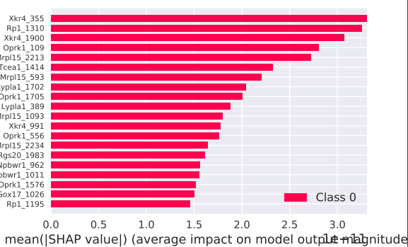
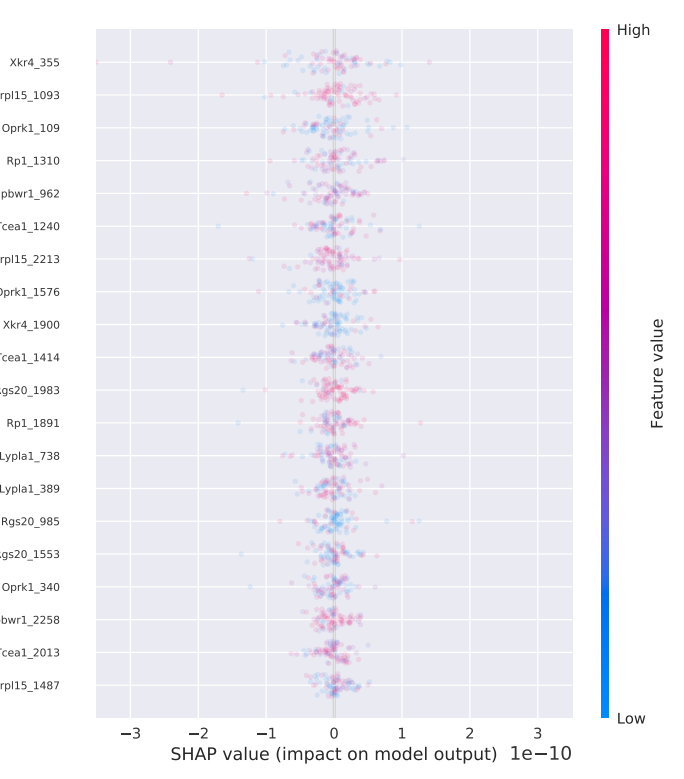
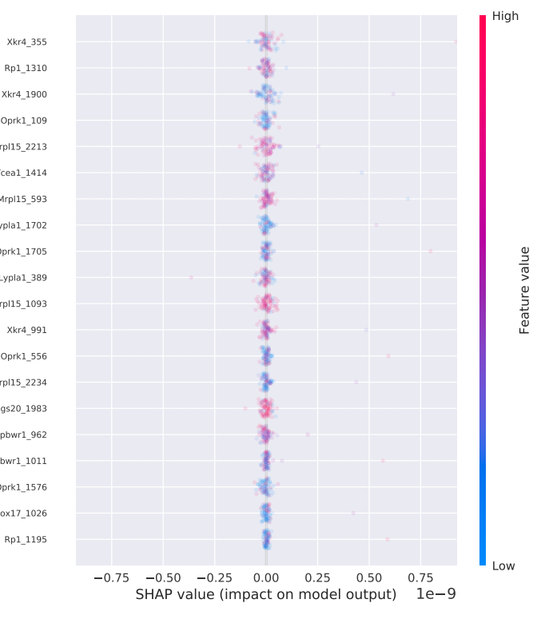

ENAS案例¶
ENAS案例以一个二分类任务为例，features数据little_exp.tsv包含100个samples，23361个features。
> wc little_exp.tsv | awk '{print $1}' # 打印行数
100
> sed -n '1,1p' little_exp.tsv | awk '{print NF}' # 打印列数
23361
target数据为两类，分别为70和30。
> grep -c 0 little_learning_target.tsv
70
> grep -c 1 little_learning_target.tsv
30
首先，准备配置文件，具体如下所示：
{
"name": "enas_demo", // Project name
"model": {
"type": "enas",
"args": {
"output_classes": 2} // 分类数目
},
"data_train": {
"type": "DataLoader",
"args":{
"data_dir": "/data_autogenome/data_test", //数据所在文件夹，推荐使用绝对路径
"features_file": "little_exp.tsv", //features文件名
"labels_file": "little_learning_target.tsv", //target文件名
"validation_split": 0.2, //验证集比例
"shuffle": true, //训练时是否对数据进行打乱操作
"delimiter": " " //数据分隔符，default: '\t'
}
},
"data_evaluate": {
"type": "DataLoader",
"args": {
"data_dir": "./data_autogenome/data_test",
"features_file": "little_exp.tsv", //用于单独评估的features文件名
"labels_file": "little_learning_target.tsv", //用于单独评估的target文件名
"delimiter": " "
}
},
"data_predict": {
"type": "DataLoader",
"args": {
"data_dir": "./data_autogenome/data_test",
"features_file": "little_exp.tsv", //用于单独预测的features文件名
"delimiter": " "
}
},
"input_fn": {
"num_threads": 16 //读取数据线程数
},
"trainer": {
"child_num_layers": 3, //除第一层外的网络层数，enas中将固定第一层大小，后面的层数搜索空间最大值为第一层大小，即max_search_channel
"batch_size": 64, //每次训练的样本数大小
"max_number_of_epoches_in_search": 10, //超参搜索阶段，搜索的epoches数目
"max_number_of_epoches_in_fixed": 50, //训练阶段epoch数目
"top_k_candidates": 2, //搜索结束后对多少个候选网络进行训练，>=2
"child_l2_reg": 1e-4, //l2 loss正则化项
"max_search_channel": 512, //第一层网络大小，也是后面网络搜索空间上限
"save_dir": "/experiments/" //保存日志、模型参数、结果输出的文件夹名称
},
"evaluator": {
"max_number_of_steps": 10,
"batch_size":100
},
"predictor": {
"max_number_of_steps": 10,
"batch_size":100
},
"explainer": {
"args": {
"plot_type": "bar",
"features_name_file": "/data_autogenome/data_test/names_2.txt", //变量名文件，一列，行数为变量个数
"num_samples": 80,
"ranked_outputs": 20
}
}
}
使用¶
AutoGenome的使用主要包含以下几步：
导入autogenome包
import autogenome as ag
读取配置文件，配置文件如上述所示
automl = ag.auto("/data_autogenome/data_test/json_hub_simple/enas_test.json")
配置文件读取成功后，会打印如下日志：
========================================================== ----------Use the config from ./data_autogenome/data_test/json_hub_simple/enas_test.json ----------Initialize enas class ----------Initialize data_loader class ========================================================== ################################################################################# # # # # Ready to search the best neural arch for enas model # # # # #################################################################################训练模型。根据配置文件中训练参数进行模型训练，将数据集划分为训练集:验证集为8:2，使用训练集数据进行训练，同时在验证集数据上进行评估，保存在验证集数据上评价指标（trainer.monitor: “accuracy”）更好的模型和参数到相应文件夹（trainer.saver: “./experiments”）中的
models文件夹中automl.train()
ENAS先进行网络结构搜索，搜索
trainer.max_number_of_epoches_in_search个epoches数目，搜索结束后挑选结果最好的trainer.top_k_candidates个网络结构，并分别训练trainer.max_number_of_epoches_in_fixed个epoches数目，训练过程中在验证集上进行评估，当结果更好时保存模型参数，训练过程中部分日志如下:----------In Hyper & Training Search stage ... Running will end at step: 20 step: 0(global step: 0) sample/sec: 21.559 acc: 0.641 epoch: 0.000 l2 loss: 1.127 ch_step: 0.000 child loss: 1.779 ('[3 0 1 2 1 1]', 0.265625) ('[0 4 1 2 0 1]', 0.375) ('[4 4 1 4 1 1]', 0.25) ('[4 0 1 0 1 1]', 0.28125) ... ('[0 2 0 3 0 0]', 0.328125) ('[1 0 0 3 0 1]', 0.265625) ('[0 3 0 2 0 0]', 0.296875) ('[3 1 0 2 0 1]', 0.28125) step: 10(global step: 10) sample/sec: 801.774 acc: 0.938 epoch: 5.000 l2 loss: 1.142 ch_step: 0.000 child loss: 1.275 ... enas train time : 0.30 minutes. training [2 4 0 0 0 0] Saving checkpoints for 0 into experiments/enas/models/enas_demo/1225_103754/1/model.ckpt. Running will end at step: 100 step: 0(global step: 0) sample/sec: 45.455 train_acc: 0.641 child l2 loss:: 0.230 child loss:: 0.784 {'valid_acc': 0.734375}, 0 old: 0, new: 0.734375 [VALIDATION METRICS] step: 1 valid_acc: 0.734 Saving checkpoints for 2 into experiments/enas/models/enas_demo/1225_103754/1_1/best_model.ckpt. {'valid_acc': 0.625}, 0.734375 [VALIDATION METRICS] step: 3 valid_acc: 0.625 ... training [1 4 0 1 1 0] ... training arc: [1 4 0 1 1 0], valid_acc: 1.0 Best arc:[1 4 0 1 1 0], eval_acc:1.0, max_k:2
日志中会打印候选的网络结构、训练过程中最佳acc及对应的网络结构。
评估模型。根据上步所训练的模型结构及模型参数，评估在
data_evaluate上表现，分类模型输出accuracy值和confusion matrixautoml.evaluate()
部分日志如下所示：
----------In Evaluation stage Restoring parameters from experiments/enas/models/enas_demo/1225_103754/2_1/best_model.ckpt-54 Running local_init_op. Done running local_init_op. step: 1 batch/sec: 57.737 valid_acc: 1.000 step: 3 batch/sec: 53.513 valid_acc: 1.000 step: 5 batch/sec: 63.091 valid_acc: 1.000 step: 7 batch/sec: 57.627 valid_acc: 1.000 step: 9 batch/sec: 63.674 valid_acc: 1.000 valid_acc: 1.0 [10 batches] Confusion matrix plot is 'experiments/enas/output_files/enas_demo/1225_103754/enas_confusion_matrix.pdf'
得到的confusion matrix图如下所示，图数字大小会根据类别数多少进行调整，x轴为真值，y轴为预测值：

预测数据。根据第3步所训练的模型结构及模型参数，对于给定features数据，分类问题预测其类别及各个类别的softmax值，并输出到对应的csv文件中
automl.predict()
日志如下所示：
----------In Prediction stage Restoring parameters from experiments/enas/models/enas_demo/1225_103754/2_1/best_model.ckpt-54 Running local_init_op. Done running local_init_op. step: 9 batch/sec: 63.824 [10 batches] Predicted values file is "experiments/enas/output_files/enas_demo/1225_103754/enas_predicted_result_data_frame.csv"
如日志所示，将输出预测的target文件，文件第一列
predicted_result，第二列softmax_value为各个类别的softmax值。变量重要性排序。根据第3步所训练的模型结构及模型参数，对变量重要性进行排序，输出各个类别变量重要性，
explainer中需要指定变量名对应的文件。automl.explain()
对模型变量重要性进行排序，输出日志如下：
----------Initialize Shap class Restoring parameters from experiments/enas/models/enas_demo/1225_103754/2_1/best_model.ckpt-54 ----------Computing shap_values with 80 examples and 23361 features importance plot is 'experiments/enas/output_files/enas_demo/1225_103754/_dot0_feature_importance_summary.pdf' importance plot is 'experiments/enas/output_files/enas_demo/1225_103754/_dot1_feature_importance_summary.pdf' features orders in all classes is saved in 'experiments/enas/output_files/enas_demo/1225_103754/_features_orders.csv' importance plot for every classes is 'experiments/enas/output_files/enas_demo/1225_103754/class_1feature_importance_summary.pdf' importance plot for every classes is 'experiments/enas/output_files/enas_demo/1225_103754/class_0feature_importance_summary.pdf' importance plot is 'experiments/enas/output_files/enas_demo/1225_103754/_barTotal_feature_importance_summary.pdf' shap_values every classes is 'experiments/enas/output_files/enas_demo/1225_103754/_class_0shap_values.csv' shap_values every classes is 'experiments/enas/output_files/enas_demo/1225_103754/_class_1shap_values.csv'
运行结束后将输出各个类别的变量重要性条图和点图和总的变量重要性图，如下所示：
总的变量重要性图：

class 1变量重要性条图：

class 0变量重要性条图：

class 1变量重要性点图：

class 0变量重要性点图：
